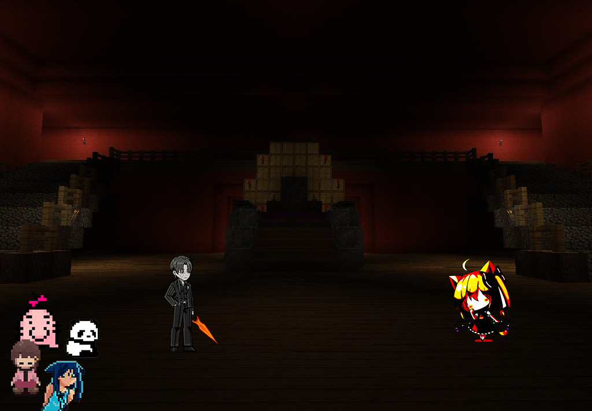

Nia logró encontrar el patrón que descifraba el código y se abrió una entrada secreta.
Al entrar vimos que era un espacio enorme y vacío, lleno de partes mecánicas y monitores que observaban partes de la isla.
Al fondo, se encontraba Aze. Estaba parado en la oscuridad con la forma en la que lo recordábamos, como el demonio escarlata.
"¿Aze, por qué nos llamaste aquí? ¿Por qué nos estas haciendo esto?"
...
No respondió nada ni movió ni un solo músculo. Nos percatamos de que no podíamos ver su expresión siquiera.
Bauti dió un paso adelante.
"Señor Aze, tendré que intervenir yo mismo si no da respuestas."
Tras un breve silencio, se escuchó una risa.
Bauti corrió hasta Aze y lo atravesó con su espada... solo para darse cuenta de que Aze ya estaba muerto.
Se fue la luz y se volvió a escuchar una risa.
De la nada, se fue la luz y se escuchó cómo el suelo se alzaba para separarnos y sellarnos de cada uno a lo largo del pasillo.